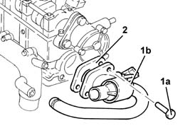

1088C42 Thermostat - R.R. with cylinder head removed
- Path
- Procedures > 10 ENGINE > 1088 ENGINE COOLING > 1088C WATER PUMP AND THERMOSTAT > 1088C42 Thermostat - R.R. with cylinder head removed
- Kind
- repair procedure (removal / refitting; the operation number is the code)
- Applies to
- engines: 2.4 JTD 10V; all production periods
- Interactive page
- https://sloeber94.github.io/elrnDB-lThss/en/#/498159
Applies to: all engines; all production periods
 Removing
Removing
 Refitting
Refitting1. Undo the bolts (1a) and remove the thermostat (1b) complete with pipe and sensor.
2. Remove the seal.

Applies to: all engines; all production periods
Refitting
Removing- Place the gasket back in its housing.
- Place the thermostat complete with pipes and sensor back in its housing and tighten the bolts to the recommended torque.
 | Value - daNm | Fastening | Component | Ø |
|---|---|---|---|---|
. | 2.3 - 3.3 (cylinder head side) | Bolt | THERMOSTAT | M8 |